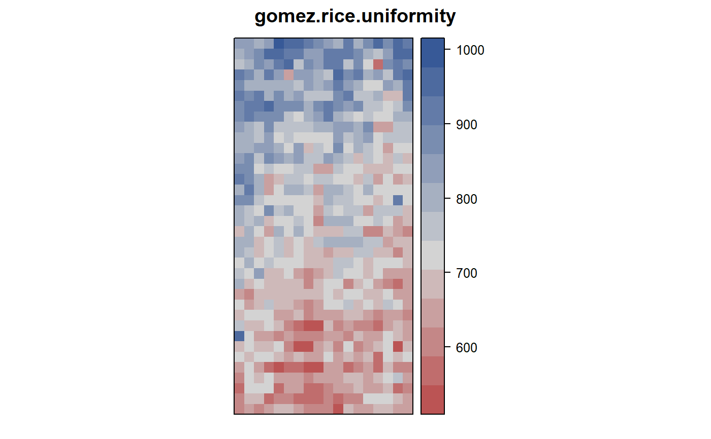
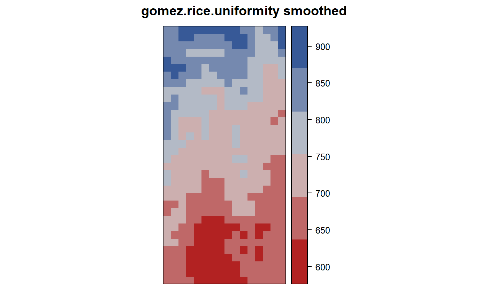
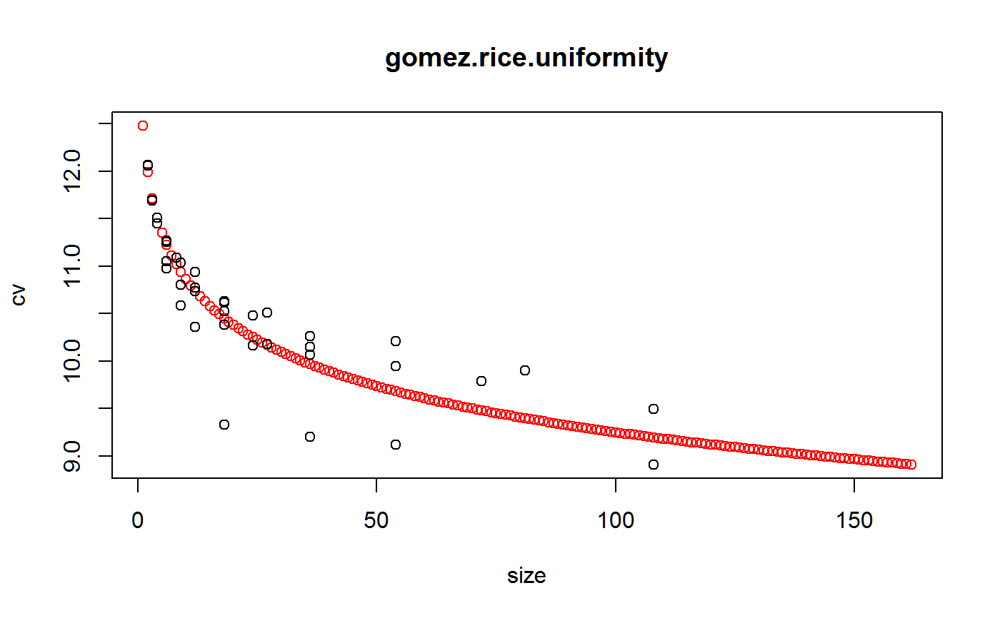

gomez.rice.uniformity.RdUniformity trial of rice in Philippines.
A data frame with 648 observations on the following 3 variables.
rowrow
colcolumn
yieldgrain yield, grams/m^2
An area 20 meters by 38 meters was planted to rice variety IR8. At harvest, a 1-meter border was removed around the field and discarded. Each square meter (1 meter by 1 meter) was harvested and weighed.
Field width: 18 plots x 1 m = 18 m
Field length: 38 plots x 1 m = 38 m
Used with permission of Kwanchai Gomez.
Gomez, K.A. and Gomez, A.A. (1984). Statistical Procedures for Agricultural Research. Wiley-Interscience. Page 481.
# \dontrun{ library(agridat) data(gomez.rice.uniformity) dat <- gomez.rice.uniformity libs(desplot) # Raw data plot desplot(dat, yield ~ col*row, aspect=38/18, # true aspect main="gomez.rice.uniformity")libs(desplot, reshape2) # 3x3 moving average. Gomez figure 12.1 dmat <- melt(dat, id.var=c('col','row')) dmat <- acast(dmat, row~col) m0 <- dmat cx <- 2:17 rx <- 2:35 dmat3 <- (m0[rx+1,cx+1]+m0[rx+1,cx]+m0[rx+1,cx-1]+ m0[rx,cx+1]+m0[rx,cx]+m0[rx,cx-1]+ m0[rx-1,cx+1]+m0[rx-1,cx]+m0[rx-1,cx-1])/9 dat3 <- melt(dmat3) desplot(dat3, value~Var2*Var1, aspect=38/18, at=c(576,637,695,753,811,870,927), main="gomez.rice.uniformity smoothed")libs(agricolae) # Gomez table 12.4 tab <- index.smith(dmat, main="gomez.rice.uniformity", col="red")$uniformitytab <- data.frame(tab) ## # Gomez figure 12.2 ## op <- par(mar=c(5,4,4,4)+.1) ## m1 <- nls(Vx ~ 9041/Size^b, data=tab, start=list(b=1)) ## plot(Vx ~ Size, tab, xlab="Plot size, m^2") ## lines(fitted(m1) ~ tab$Size, col='red') ## axis(4, at=tab$Vx, labels=tab$CV) ## mtext("CV", 4, line=2) ## par(op) # }